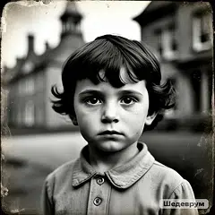
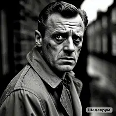
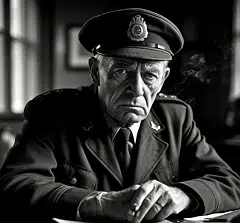

12 июня 1943
ЭПИДЕМИЯ В ПРИЮТЕ СВ. ЛЮЦИИ
Приют св. Люции закрыт по причинам, не разглашаемым общественности...
Читать →Архив города • 1936–1953
Маленький английский городок, где время остановилось. Где часы на станции всегда показывают 3:33. Где пропадают люди. Где у каждого есть прошлое.
▶ Начать расследованиеВы — Джеймс Харпер, частный детектив из Лондона. Десять лет назад вы покинули Блэквуд после трагедии, о которой не любите вспоминать.
Теперь вы возвращаетесь. Телеграмма от старого друга Томаса Моргана: «Приезжай немедленно. Пропадают люди. Полиция бездействует. Я боюсь, что следующий — я».
«То, что вы найдёте здесь, изменит всё.»
Нажмите на метку, чтобы узнать больше о локации.

Нажмите на метку на карте.
Двадцать лет истории Блэквуда — на одной странице.
В Лондоне рождается мальчик по имени Джеймс Харпер. Ему суждено умереть в возрасте семи лет.
В Блэквуде открывается детский приют св. Люции. Главный врач — доктор Элизабет Кроу.
В приюте вспыхивает неизвестная болезнь. Умирают первые дети: Мэри, Джон, Питер.
Доктор Кроу разрабатывает методику стирания памяти как «лечение». Начинаются сеансы.
Двенадцать детей хоронят в закрытом режиме. Четверо объявлены «пропавшими без вести».
Под приютом обнаружен подземный зал. Кроу и Морган превращают его в место ритуалов. Алтарь с именами.
В Блэквуде продолжают исчезать дети. Инспектор Морган закрывает все дела «за недостатком улик».
Медицинская комиссия не подтверждает эпидемию. Официальная версия — «естественные причины».
Томас Морган, сын инспектора, узнаёт правду и скрывается. Отправляет телеграмму Джеймсу.
Джеймс Харпер приезжает в Блэквуд. Начинается расследование. Начинается игра.
Пять возможных концовок. Какая будет твоя — зависит от твоих решений. Узнать →
Выдержки из «Блэквудского вестника». Нажмите на статью, чтобы прочитать полностью.
Приют св. Люции закрыт по причинам, не разглашаемым общественности...
Читать →Церемония прощания прошла в закрытом режиме...
Читать →Приют объявляет о наборе медсестёр...
Читать →С прискорбием сообщаем о смерти Мэри Уилсон...
Читать →За последний год в Блэквуде пропали трое детей...
Читать →Редакция получила письмо от миссис Уилсон...
Читать →Медицинская комиссия не подтвердила слухи...
Читать →Эксклюзивное интервью с доктором Кроу...
Читать →В Блэквуд прибыл частный детектив Джеймс Харпер...
Читать →По слухам, в мэрии проходят закрытые заседания...
Читать →На кладбище обнаружено тело неизвестного мужчины...
Читать →Мэр Блэквуда отказался комментировать события...
Читать →Персонажи Блэквуда. Кто они на самом деле?

Роль: частный детектив, главный герой
Возраст: 27 лет
Настоящее имя: неизвестно
Вернулся в Блэквуд после десяти лет отсутствия. Не помнит своего детства.
«Я не помню своего детства. Только Лондон, уже после.»

Роль: пропавший друг
Возраст: 27 лет
Отец: инспектор Джордж Морган
Скрывается десять лет. Единственный, кто знает всю правду о Блэквуде.
«Он смотрит через твои глаза.»
Роль: врач приюта, затем городской врач
Возраст: 68 лет
Роль в сюжете: подозреваемая
Проводила эксперименты над детьми. Убеждена, что спасала их.
«Наука требует жертв. Я не жду, что вы поймёте.»

Роль: полиция Блэквуда
Возраст: 55 лет
Роль в сюжете: свидетель, соучастник
27 лет скрывал правду о приюте. Отец Томаса. Устал молчать.
«Я убил своего сына. Молчанием.»
Роль: память Ложи
Возраст: неизвестен
Роль в сюжете: загадка
Появляется в момент кризиса. Говорит загадками. Знает всё. Никогда не называет себя.
«Я — то, что осталось. Или то, что ты забыл.»
С каждым можно поговорить. Они отвечают сами. Иногда пишут первыми.
Полная детективная история в Telegram.
6 глав • 12 улик • 4 персонажа • 5 концовок
▶ Играть в Telegram